Each screen is clickable: modes, tabs and recent files link to each other. Pages follow your system's light or dark setting. Save a copy always opens the save error here, so you can see that state.
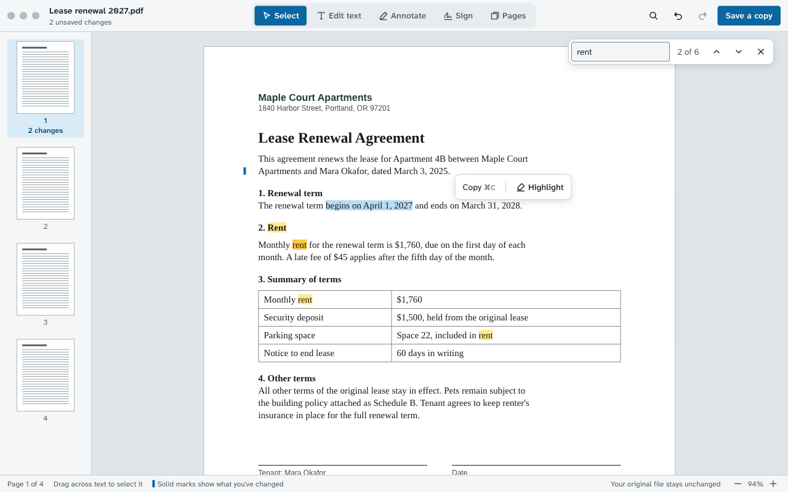
SelectWindows version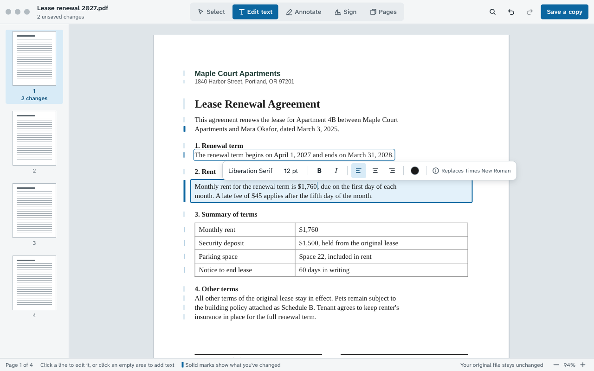
Edit textWindows version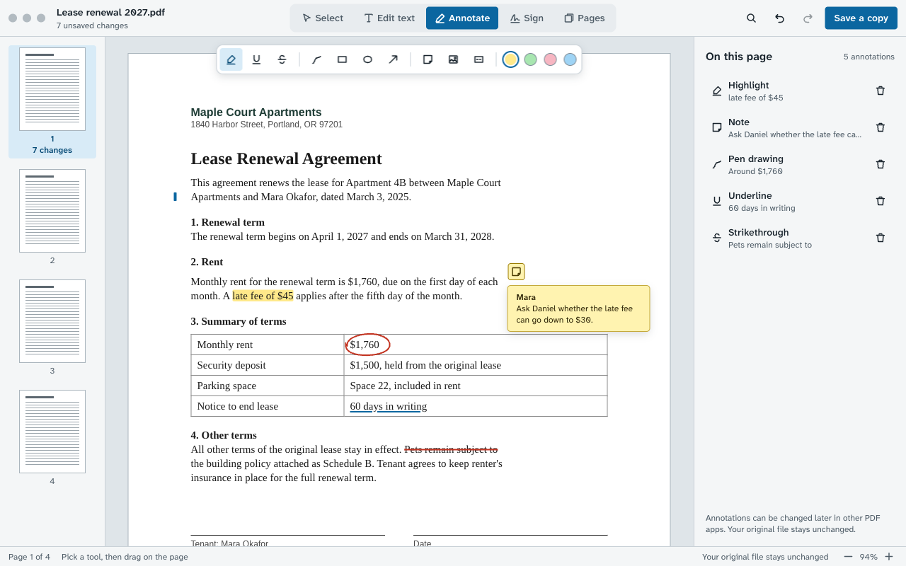
AnnotateWindows version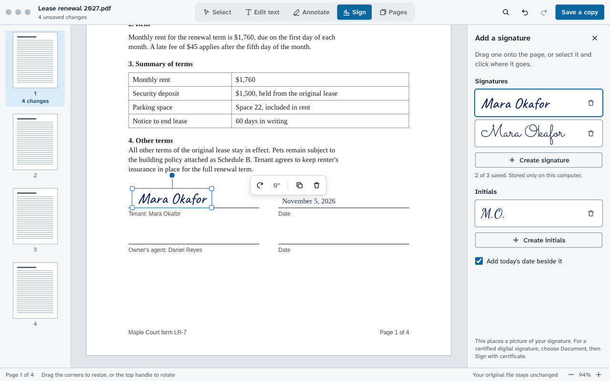
SignWindows version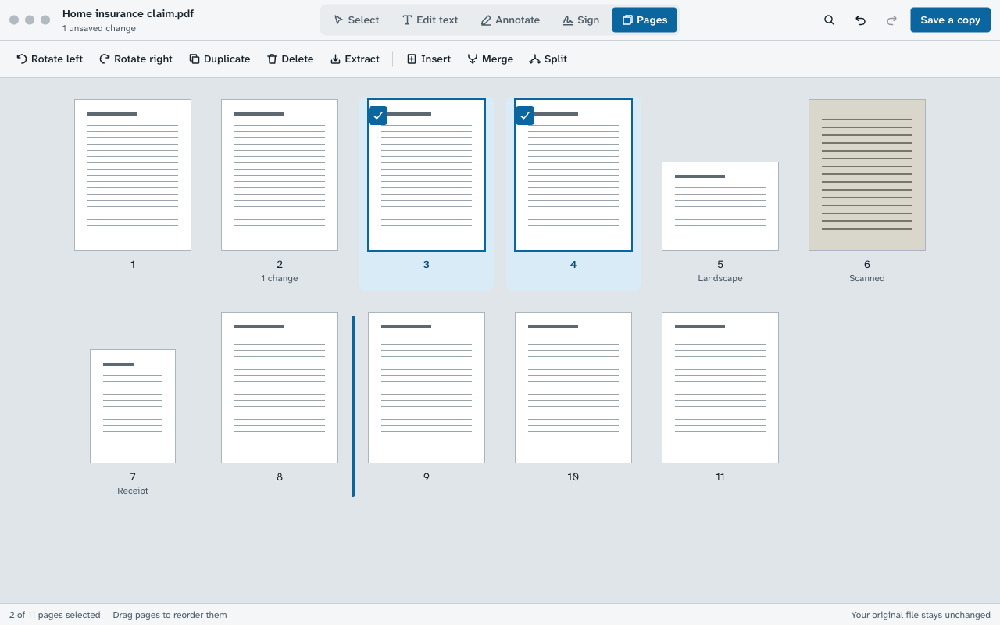
PagesWindows version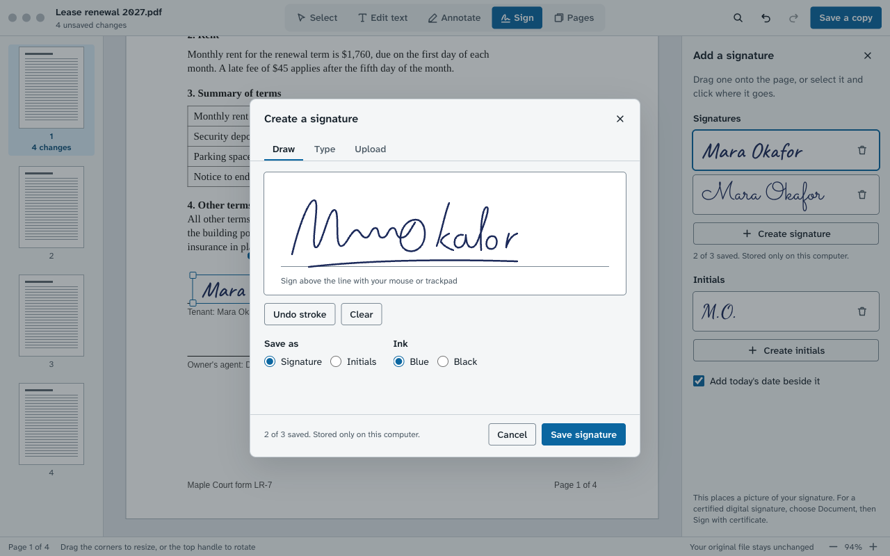
Signature: drawWindows version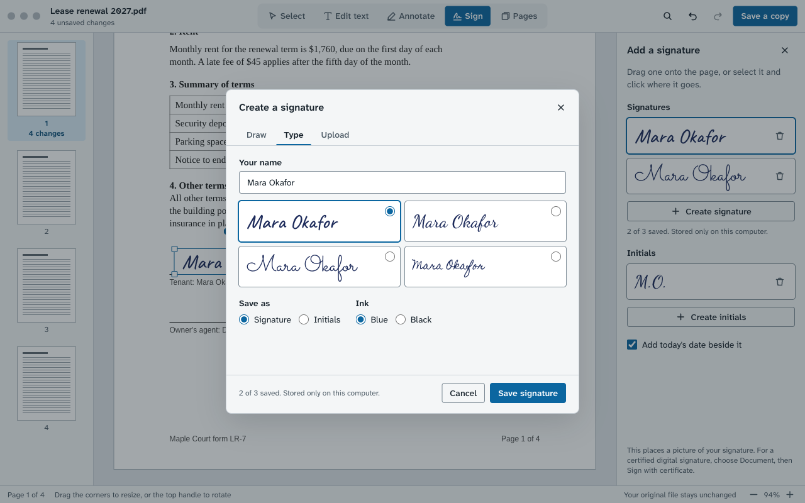
Signature: typeWindows version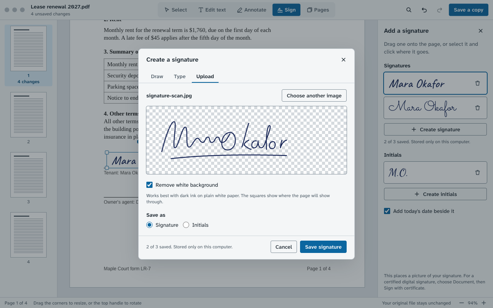
Signature: uploadWindows version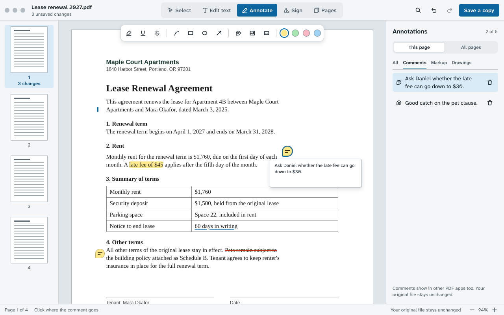
CommentWindows version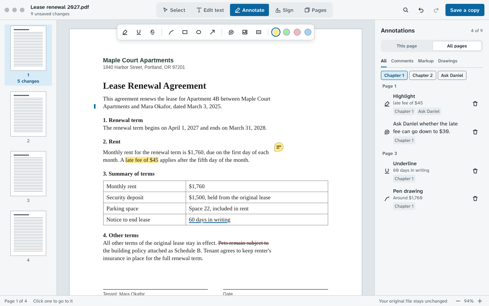
Whole document, by tagWindows version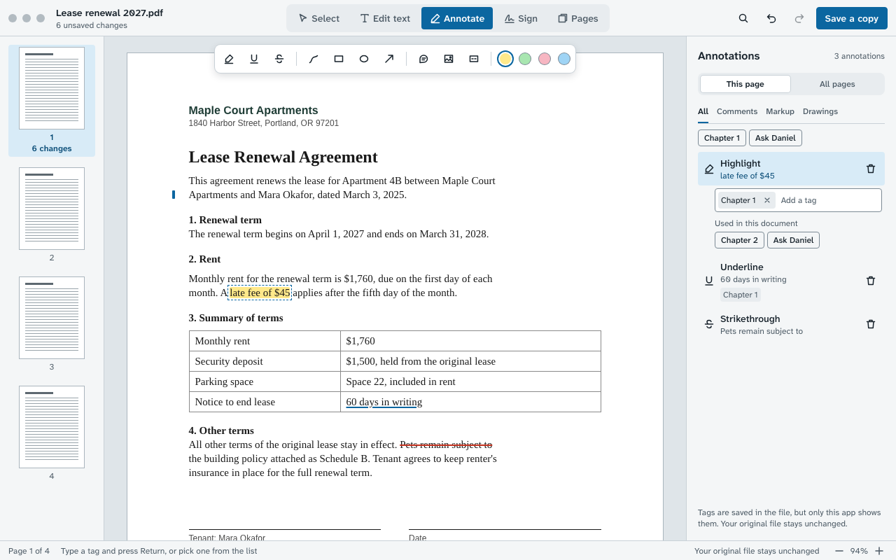
Adding a tagWindows version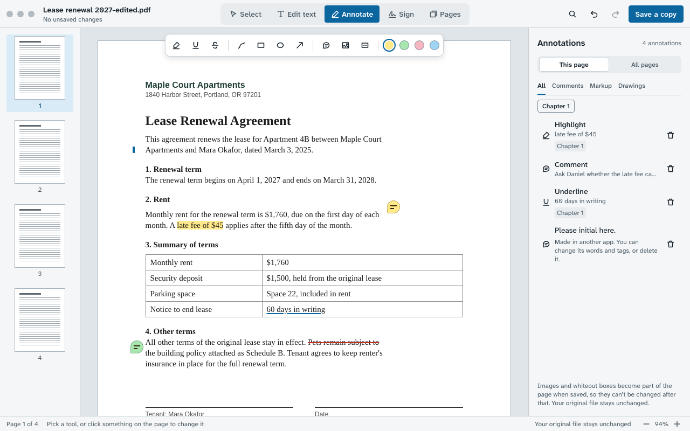
Reopened, with saved annotationsWindows version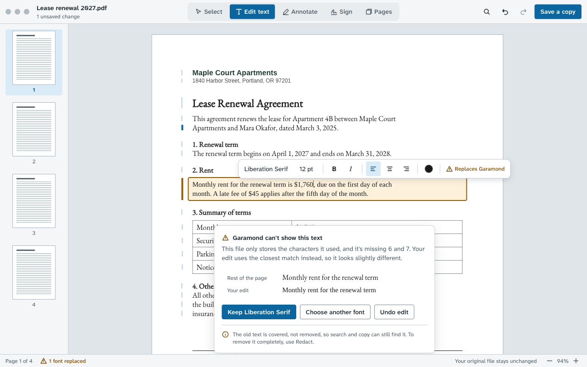
Font substitutionWindows version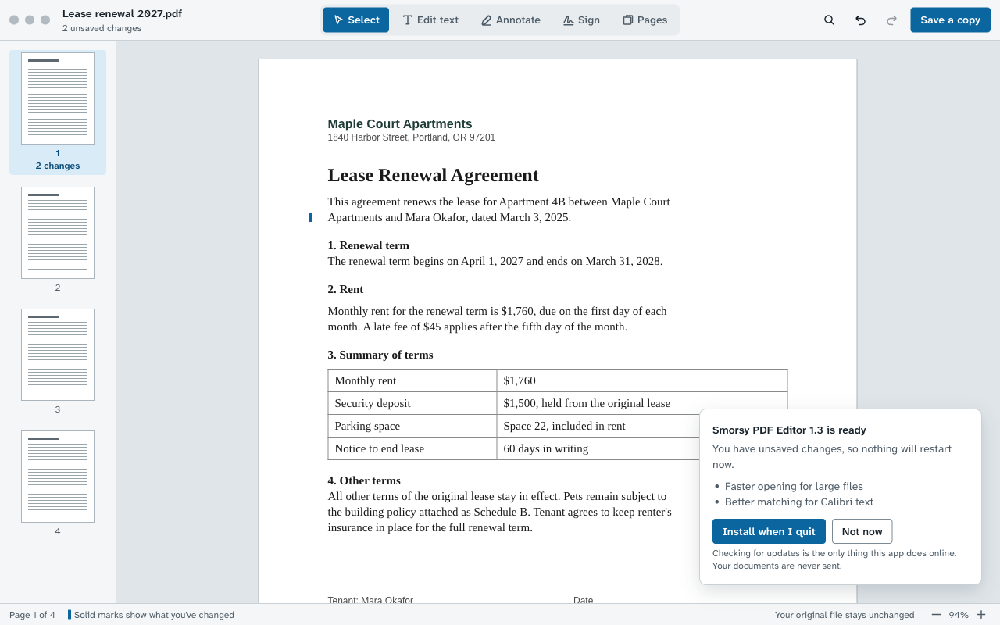
Update promptWindows version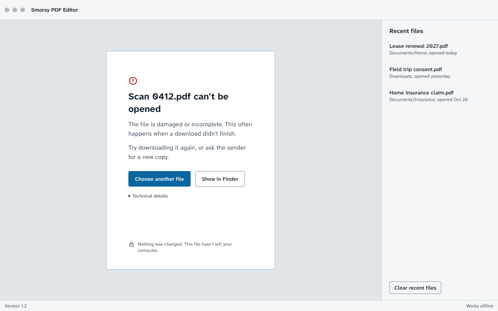
Can't open fileWindows version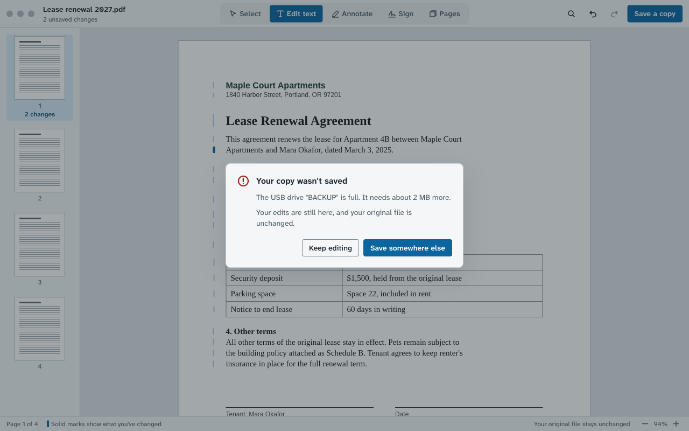
Can't saveWindows version